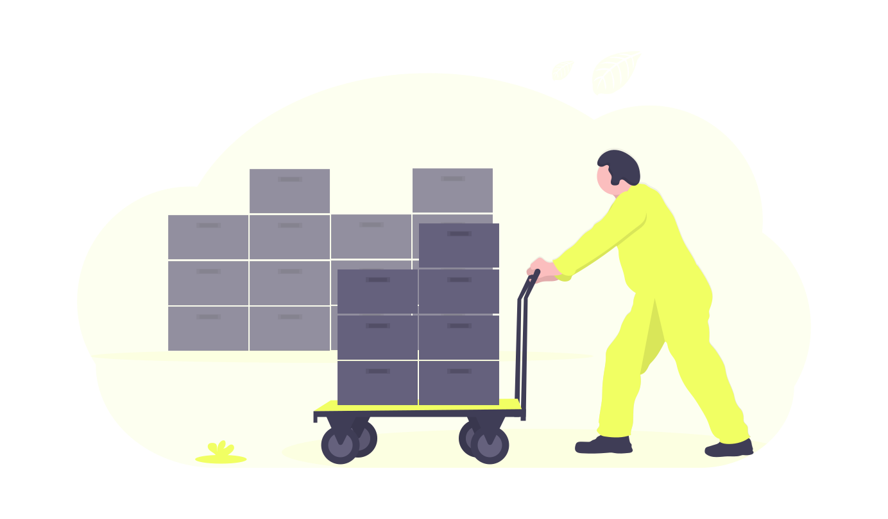

AUTOMATECHNOLOGY inicia sus actividades en el año 2010, nos orientamos a la fabricación de máquinas etiquetadoras automáticas, ofreciendo siempre la más eficiente e inmediata capacidad de respuesta. A pedido de nuestros clientes, nos insertamos completamente en el área del packaging y comenzamos a producir líneas envasadoras y tapadoras, manteniendo nuestra política de entregar un equipo óptimo.
Todo esto es posible gracias a nuestro gran equipo técnico, seleccionado y capacitado especialmente para hacerle frente a cualquier problemática.
Nuestra empresa se caracteriza por la calidad de nuestros equipos, brindando durabilidad y eficiencia a través de diversas alternativas, ya sea creando nuevos canales para resolver las necesidades insatisfechas o solucionando problemas existentes.